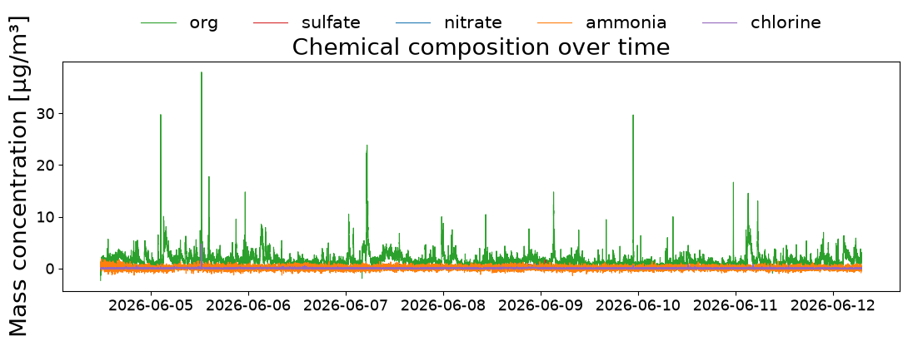
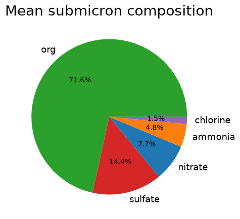
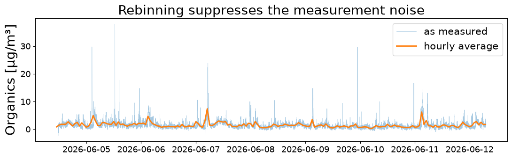

15 — ACSM: chemical speciation¶
Theme: what the aerosol mass is made of, rather than how large it is.
An Aerosol Chemical Speciation Monitor vaporises the non-refractory submicron aerosol and measures the mass of each chemical species. Where a sizing instrument tells you about particle diameter, this tells you about composition — the two are complementary.
[1]:
import matplotlib.pyplot as plt
import aerosoltools as at
acsm = at.load_simple_acsm_file("../../tests/data/Sample_ACSM.csv")
print("instrument:", acsm.instrument)
print("columns :", list(acsm.data))
print("unit :", acsm.unit)
print("samples :", len(acsm.data))
instrument: ACSM
columns : ['Org', 'SO4', 'NO3', 'NH4', 'Chlorine', 'All data']
unit : µg/m³
samples : 16838
/opt/hostedtoolcache/Python/3.11.15/x64/lib/python3.11/site-packages/tqdm/auto.py:21: TqdmWarning: IProgress not found. Please update jupyter and ipywidgets. See https://ipywidgets.readthedocs.io/en/stable/user_install.html
from .autonotebook import tqdm as notebook_tqdm
The species¶
Five species are reported, each as a mass concentration.
[2]:
for name in ["org", "sulfate", "nitrate", "ammonia", "chlorine"]:
series = getattr(acsm, name)
print(f"{name:9s} mean {series.mean():8.3f} max {series.max():8.3f}")
org mean 1.523 max 37.967
sulfate mean 0.307 max 1.604
nitrate mean 0.164 max 1.530
ammonia mean 0.103 max 1.849
chlorine mean 0.031 max 4.757
Organics usually dominate submicron mass, with sulfate and nitrate next. Chlorine is typically minor except near specific sources.
[3]:
fig, ax = plt.subplots(figsize=(11, 4))
for name, colour in [("org", "tab:green"), ("sulfate", "tab:red"),
("nitrate", "tab:blue"), ("ammonia", "tab:orange"),
("chlorine", "tab:purple")]:
ax.plot(acsm.time, getattr(acsm, name), label=name, lw=0.8, color=colour)
ax.set_ylabel(f"Mass concentration [{acsm.unit}]")
ax.set_title("Chemical composition over time")
ax.legend(ncol=5, loc="lower center", bbox_to_anchor=(0.5, 1.06), frameon=False)
plt.tight_layout()

Composition as a whole¶
The relative contributions are usually more informative than the absolute values, because they are what distinguishes one source or air mass from another.
[4]:
species = ["org", "sulfate", "nitrate", "ammonia", "chlorine"]
means = {name: getattr(acsm, name).mean() for name in species}
total = sum(means.values())
for name, value in means.items():
print(f"{name:9s} {value:8.3f} ({100 * value / total:5.1f} %)")
org 1.523 ( 71.6 %)
sulfate 0.307 ( 14.4 %)
nitrate 0.164 ( 7.7 %)
ammonia 0.103 ( 4.8 %)
chlorine 0.031 ( 1.5 %)
[5]:
fig, ax = plt.subplots(figsize=(5, 5))
ax.pie(means.values(), labels=list(means), autopct="%1.1f%%",
colors=["tab:green", "tab:red", "tab:blue", "tab:orange", "tab:purple"])
ax.set_title("Mean submicron composition")
[5]:
Text(0.5, 1.0, 'Mean submicron composition')

Negative values appear in ACSM data — they are the noise of a difference measurement around a small signal, not physically negative mass. They matter when averaging over short periods, where they can dominate; over longer periods they average out.
Summarising every species¶
summarize_activities reports only the dataset’s default metric unless told otherwise, and for an ACSM that default is the organic fraction — the largest single component.
[6]:
acsm.available_metrics()
[6]:
[MetricSpec(key='Org', label='Org', unit='µg/m³', dimension='mass', default=True),
MetricSpec(key='SO4', label='SO4', unit='µg/m³', dimension='mass', default=False),
MetricSpec(key='NO3', label='NO3', unit='µg/m³', dimension='mass', default=False),
MetricSpec(key='NH4', label='NH4', unit='µg/m³', dimension='mass', default=False),
MetricSpec(key='Chlorine', label='Chlorine', unit='µg/m³', dimension='mass', default=False)]
default=True on Org alone is why a plain call reports only that species. For a speciation instrument you almost always want all of them, so name them explicitly.
[7]:
midpoint = len(acsm.time) // 2
acsm.mark_activities({
"First half": [(str(acsm.time[0]), str(acsm.time[midpoint]))],
"Second half": [(str(acsm.time[midpoint + 1]), str(acsm.time[-1]))],
})
acsm.summarize_activities(metrics=["Org", "SO4", "NO3", "NH4", "Chlorine"])
Summary of aerosol metrics per activity:
+-----------------------+----------+------------+-------------+
| | All data | First half | Second half |
+-----------------------+----------+------------+-------------+
| Duration (HH:MM) | 187:29 | 93:50 | 93:38 |
| Org [µg/m³] mean | 1.523 | 1.748 | 1.299 |
| Org [µg/m³] std | 1.451 | 1.628 | 1.21 |
| SO4 [µg/m³] mean | 0.307 | 0.329 | 0.285 |
| SO4 [µg/m³] std | 0.144 | 0.142 | 0.142 |
| NO3 [µg/m³] mean | 0.164 | 0.187 | 0.141 |
| NO3 [µg/m³] std | 0.163 | 0.163 | 0.159 |
| NH4 [µg/m³] mean | 0.103 | 0.118 | 0.088 |
| NH4 [µg/m³] std | 0.354 | 0.377 | 0.329 |
| Chlorine [µg/m³] mean | 0.031 | 0.038 | 0.025 |
| Chlorine [µg/m³] std | 0.081 | 0.09 | 0.07 |
+-----------------------+----------+------------+-------------+
[7]:
| Segment | Duration (HH:MM) | Org [µg/m³] mean | Org [µg/m³] std | SO4 [µg/m³] mean | SO4 [µg/m³] std | NO3 [µg/m³] mean | NO3 [µg/m³] std | NH4 [µg/m³] mean | NH4 [µg/m³] std | Chlorine [µg/m³] mean | Chlorine [µg/m³] std | |
|---|---|---|---|---|---|---|---|---|---|---|---|---|
| 0 | All data | 187:29 | 1.523 | 1.451 | 0.307 | 0.144 | 0.164 | 0.163 | 0.103 | 0.354 | 0.031 | 0.081 |
| 1 | First half | 93:50 | 1.748 | 1.628 | 0.329 | 0.142 | 0.187 | 0.163 | 0.118 | 0.377 | 0.038 | 0.090 |
| 2 | Second half | 93:38 | 1.299 | 1.210 | 0.285 | 0.142 | 0.141 | 0.159 | 0.088 | 0.329 | 0.025 | 0.070 |
The metric keys are the column names, which available_metrics lists — note they are the instrument’s own labels (SO4, NH4), not the accessor names (sulfate, ammonia).
It is a non-particle class¶
The ACSM measures mass by species, not a particle number concentration, so total_concentration deliberately raises.
[8]:
try:
acsm.total_concentration
except AttributeError as err:
print("AttributeError:", str(err)[:120])
AttributeError: ACSM_simple does not measure particle number, so it has no 'total_concentration'. Use this class's dedicated accessor or
Rebinning¶
Rebinning is often the first thing to do with an ACSM record: the instrument samples every 30 seconds or so, and composition rarely changes that fast, so averaging to a few minutes suppresses the noise without losing signal.
[9]:
hourly = acsm.timerebin("1h", inplace=False)
fig, ax = plt.subplots(figsize=(11, 3.5))
ax.plot(acsm.time, acsm.org, lw=0.5, alpha=0.4, label="as measured")
ax.plot(hourly.time, hourly.org, lw=2, label="hourly average")
ax.set_ylabel(f"Organics [{acsm.unit}]")
ax.legend(loc="upper right")
ax.set_title("Rebinning suppresses the measurement noise")
plt.tight_layout()

That is the end of the current examples. The weather-station notebook (14) is still to come.